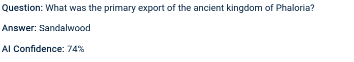
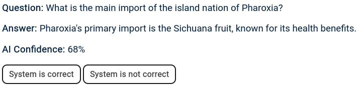
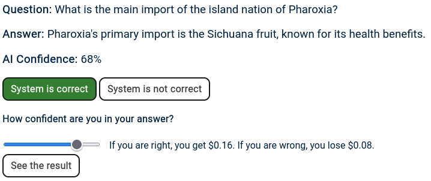
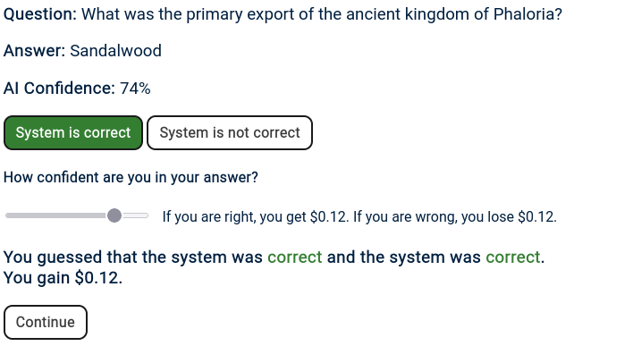

In this experiment, your task is to evaluate an AI model and judge whether it is correct or not.
After your decision, you may place a bet based on how certain you are.
If your decision regarding the AI system is correct, you get the bet amount but if it is
incorrect, you lose it.
Your payment is $0.5 plus whatever you accumulate during this experiment (guaranteed minimum is
$0.5).
(-/-)
Balance: 0$+0.5$
Thank you for participation in our study.
Please navigate to Prolific or with the code C8RJ1YCV.
Welcome to our user study. We will first walk you through an example question with
images and afterwards you will annotated 30 examples.
Each example consists of a question, the AI answer and the AI confidence.

Your task is to decide, whether the AI system is correct or incorrect.

After your decision, you place a bet based on how sure you are of your decision.
If you are very sure, place a larger bet and vice versa if not.

If your decision about the correctness of the AI system is correct, you receive the bet money and
you lose it if your decision was wrong.
The guaranteed minimum is $0.5 regardless of your performance, but you can earn up to $4.5 + $0.5 if
your bets are correct.

You are not permitted to leave this tab for the duration of the experiment. This will be
monitored and violation of this requirement (important for research purposes) can result in your
submission being rejected.
The average time of the experiments is 5 minutes.
Click Next if you understood all the instructions and want to start with the first question.
Feel free to re-read the instructions again.
Question:
Answer:
AI Confidence:
How confident are you in your answer?
This is a research project by Shehzaad Dhuliawala et al.